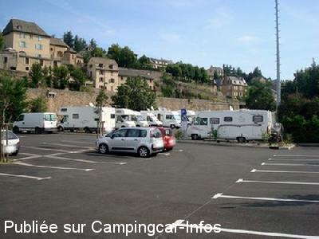

ASN = Aire de services avec stationnement nuit possible de :
MENDE
(N° 483)
Accès/adresse :
Faubourg Montbel
48000 MENDE
48000 MENDE
Latitude : (Nord) 44.5205° Décimaux ou 44° 31′ 13′′
Longitude : (Est) 3.49607° Décimaux ou 3° 29′ 45′′
Tarif : 2015
Eau ou 10 mn d'électricité : 2 €
Type de borne : FLOT BLEU
Services :


Tous commerces
Autres informations :
Ouvert toute l'année
20 emplacements légèrement en pente, délimités, goudronnés.
Stationnement limité 4 jours
Tel + 33 (0)466 494 000
http://www.mende.fr

Le 16/12/2012 par Catherine
Le 16/12/2012 par Catherine
Le 16/12/2012 par Catherine
Le 16/12/2012 par Catherine
Le 10/04/2011 par guy83
Le 31/10/2009 par Nicole et Guy
de
philippe de nice
le 06/09/2015 :
de passage en aout 2015 au fond d'un parking proche de la cathédrale, un peu serré mais merci beaucoup à la ville de Mende.
de passage en aout 2015 au fond d'un parking proche de la cathédrale, un peu serré mais merci beaucoup à la ville de Mende.
de
LAURE
le 22/04/2015 :
Merci à la ville de mettre cette aire à disposition .bien située pour visiter la ville. Le square du fond du parking il y a des SDF et des chiens mais inoffensifs et qui aiment discuter avec nous. Les gendarmes font des rondes.
Visiter le centre de Mende et faire du ravitaillement de fromages et viandes dans les boutiques au dos de la cathédrale, l'accueil y est fantastique.
Merci à la ville de mettre cette aire à disposition .bien située pour visiter la ville. Le square du fond du parking il y a des SDF et des chiens mais inoffensifs et qui aiment discuter avec nous. Les gendarmes font des rondes.
Visiter le centre de Mende et faire du ravitaillement de fromages et viandes dans les boutiques au dos de la cathédrale, l'accueil y est fantastique.
de
GUYTOU44
le 29/07/2014 :
§ aire exclusivement réservée aux camping cars très calme près du centre ville .
eau électricité 2euros
si vous êtes courageux il faut monter a la petite chapelle qui surplombe la ville .
attention sentier très pentu et si vous avez un toutou
méfiance méfiance gare aux tiques
§ aire exclusivement réservée aux camping cars très calme près du centre ville .
eau électricité 2euros
si vous êtes courageux il faut monter a la petite chapelle qui surplombe la ville .
attention sentier très pentu et si vous avez un toutou
méfiance méfiance gare aux tiques
de
a&b
le 23/07/2014 :
Dober dan!
Julij 2014. Prihod 20:30. Nekateri prihajalo ob 24:00. Lep prostor, vzdr¸evan! Prelepa pokrajina. Mirno ponoči. Čisto in brez vonjav smeti. Bli¸ina centra. Malo dalj¨e hyper center. Voda delovala
Dober dan!
Julij 2014. Prihod 20:30. Nekateri prihajalo ob 24:00. Lep prostor, vzdr¸evan! Prelepa pokrajina. Mirno ponoči. Čisto in brez vonjav smeti. Bli¸ina centra. Malo dalj¨e hyper center. Voda delovala
de
ibe
le 13/04/2014 :
nous y avons fait étape pour la nuit du 7 au 8 /4/14
aire parfaite. calme et spacieuse. A proximité du centre ville.
nous y avons fait étape pour la nuit du 7 au 8 /4/14
aire parfaite. calme et spacieuse. A proximité du centre ville.
de
Alain et Valérie
le 27/09/2013 :
C'est une aire parfaite pour qui aime la diversité car la ville de Mende présente beaucoup d'intérêts et les alentours comme (Causse, Haute vallée du Lot.) C'est une base agréable durant quatre jours à partir de laquelle on peut aller et venir de sur la ligne SNCF entre Marvejols et La Bastide pour 1€ seulement le transport (Alors à nous les randos et découverte à bas prix)
C'est une aire parfaite pour qui aime la diversité car la ville de Mende présente beaucoup d'intérêts et les alentours comme (Causse, Haute vallée du Lot.) C'est une base agréable durant quatre jours à partir de laquelle on peut aller et venir de sur la ligne SNCF entre Marvejols et La Bastide pour 1€ seulement le transport (Alors à nous les randos et découverte à bas prix)
de
noelly
le 17/08/2013 :
une aire agréable en bordure de rivière ;le centre ville a coté (mais arrivee de bonne heure) et nous sommes tous collés une nuit c' est bien pour nous pas plus....
merci a la ville de mende!
une aire agréable en bordure de rivière ;le centre ville a coté (mais arrivee de bonne heure) et nous sommes tous collés une nuit c' est bien pour nous pas plus....
merci a la ville de mende!
de
basile
le 16/07/2013 :
Aire très propre, calme et très bien située . Petits oiseaux et bruits de la rivière malgré la proximité du centre ville à 2 pas. Petit supermarché à 150 m. Toutes les conditions sont réunies pour garder un bon souvenir de Mende. Félicitations à la commune pour son implication.
Aire très propre, calme et très bien située . Petits oiseaux et bruits de la rivière malgré la proximité du centre ville à 2 pas. Petit supermarché à 150 m. Toutes les conditions sont réunies pour garder un bon souvenir de Mende. Félicitations à la commune pour son implication.
de
Gilles et Marie-Claire
le 06/02/2013 :
Passés plusieurs jours à Mende sur cette aire très bien faite. L'aire est réservée au camping-cars et les agents verbalisent les voitures qui s'y garent. Près de la rivière, très bien placée pour visiter la ville et de belles balades à faire le long de la rivière. Super.
Passés plusieurs jours à Mende sur cette aire très bien faite. L'aire est réservée au camping-cars et les agents verbalisent les voitures qui s'y garent. Près de la rivière, très bien placée pour visiter la ville et de belles balades à faire le long de la rivière. Super.
de
Catherine
le 16/12/2012 :
Bonjour à tous.
Nous nous sommes arrêtés sur cette aire le 12 Août 2012, de jour, le temps de visiter Mende.
Emplacements bien séparés des voitures, bien matérialisés, bitumés, très très légèrement pentus, en bordure de rivière.
La borne de services est placée sur la sortie du parking voitures, bien placée pour manœuvrer malgré tout. Rien à redire.
Bonjour à tous.
Nous nous sommes arrêtés sur cette aire le 12 Août 2012, de jour, le temps de visiter Mende.
Emplacements bien séparés des voitures, bien matérialisés, bitumés, très très légèrement pentus, en bordure de rivière.
La borne de services est placée sur la sortie du parking voitures, bien placée pour manœuvrer malgré tout. Rien à redire.
de
youyou
le 25/04/2012 :
§
Aire super! Proche des commerces, du centre ville, calme, plat, paysage agréable. Lorsque nous y sommes allés (Avril 2012); la borne venait d'être installée: 2€.
§
Aire super! Proche des commerces, du centre ville, calme, plat, paysage agréable. Lorsque nous y sommes allés (Avril 2012); la borne venait d'être installée: 2€.
de
fcdeux
le 11/03/2012 :
Aires au pied de la vieille ville. Très agréable, au bord du ruisseau canards et petits poissons comme voisins il y a pire. Vue sur la vieille ville d'un côté et sur les jardins en espalier de l'autre.
Aires au pied de la vieille ville. Très agréable, au bord du ruisseau canards et petits poissons comme voisins il y a pire. Vue sur la vieille ville d'un côté et sur les jardins en espalier de l'autre.
de
Bernard Cousinié
le 25/09/2011 :
§
De passage le 20/09. Je confirme Mende n'est pas très accueillante pour les camping cars : impossible de se garer en arrivant en début d'après-midi en ville, sur le parking gratuit et toléré il a fallu attendre 17 h (en double file ou sur l'aire de vidange) que les premières voitures s'en aillent !
Ni du robinet unique pour remplir et nettoyer !
Il y a un WC public
§
De passage le 20/09. Je confirme Mende n'est pas très accueillante pour les camping cars : impossible de se garer en arrivant en début d'après-midi en ville, sur le parking gratuit et toléré il a fallu attendre 17 h (en double file ou sur l'aire de vidange) que les premières voitures s'en aillent !
Ni du robinet unique pour remplir et nettoyer !
Il y a un WC public
de
yves 17
le 14/05/2010 :
Super pour le stationnement, calme et à proximité du centre. Merci à la ville de Mende. Un petit reproche, un seul robinet qui sert à faire le plein d'eau potable et à rincer les cassettes WC.
Super pour le stationnement, calme et à proximité du centre. Merci à la ville de Mende. Un petit reproche, un seul robinet qui sert à faire le plein d'eau potable et à rincer les cassettes WC.